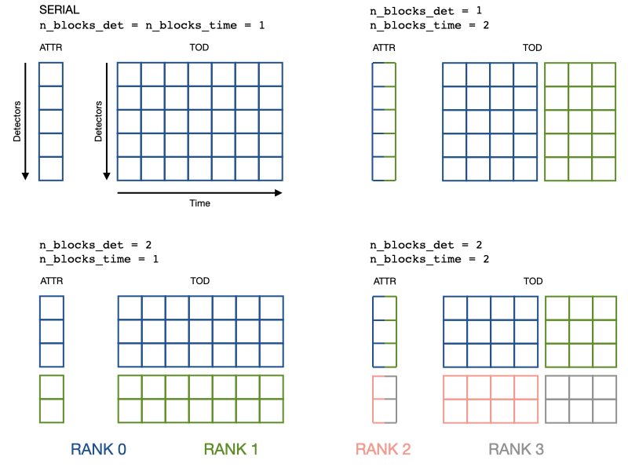

Observations#
The Observation class is the container for the data acquired by the
telescope during a scanning period (and the relevant information about it).
Serial applications#
In a serial code Observation is equivalent to an empty class in which you
can put anything:
import litebird_sim as lbs
import numpy as np
obs = lbs.Observation(
detectors=2,
start_time_global=0.0,
sampling_rate_hz=5.0,
n_samples_global=5,
)
obs.my_new_attr = 'value'
setattr(obs, 'another_new_attr', 'another value')
Across the framework, the coherence in the names and content of the
attributes is guaranteed by convention (no check is done by the
Observation class). At the moment, the most common field
that you can find in the class are the following, assuming that it is
meant to collect \(N\) samples for \(n_d\) detectors:
Observation.todis initialized when you callSimulation.create_observations(). It’s a 2D array of shape \((n_d, N)\). This means thatObservation.tod[0]is the time stream of the first detector, andobs.tod[:, 0]are the first time samples of all the detectors.You can create other TOD-like arrays through the parameter
tods; it accepts a list ofTodDescriptionobjects that specify the name of the field used to store the 2D array, a textual description, and the value fordtype. (By default, thetodfield uses 32-bit floating-point numbers.) Here is an example:sim.create_observations( detectors=[det1, det2, det3], tods=[ lbs.TodDescription( name="tod", description="TOD", dtype=np.float64, ), lbs.TodDescription( name="noise", description="1/f+white noise", dtype=np.float32 ), ], ) for cur_obs in sim.observations: print("Shape of 'tod': ", cur_obs.tod.shape) print("Shape of 'noise': ", cur_obs.noise.shape)
If you called
prepare_pointings()and thenprecompute_pointings(), the fieldObservation.pointing_matrixis a \((n_d, N, 3)\) matrix containing the pointing information in Ecliptic coordinates for each detector: colatitude θ, longitude φ, orientation ψ. If you specified a HWP in the call toprepare_pointings(), the fieldObservation.hwp_anglewill be a \((N,)\) vector containing the angle of the HWP in radians.Observation.local_flagsis a \((n_d, N)\) matrix containing flags for the \(n_d\) detectors. These flags are typically associated to peculiarities in the single detectors, like saturations or mis-calibrations.Observation.global_flagsis a vector of \(N\) elements containing flags that must be associated with all the detectors in the observation.
Keep in mind that the general rule is that detector-specific
attributes are collected in arrays. Thus, obs.calibration_factors
should be a 1-D array of \(n_d\) elements (one per each detector).
With this memory layout, typical operations look like this:
# Collect detector properties in arrays
obs.calibration_factors = np.array([1.1, 1.2])
obs.wn_levels = np.array([2.1, 2.2])
# Apply to each detector its own calibration factor
obs.tod *= obs.calibration_factors[:, None]
# Add white noise at a different level for each detector
obs.tod += (np.random.normal(size=obs.tod.shape)
* obs.wn_levels[:, None])
Parallel applications#
The only work that the Observation class actually does is handling
parallelism. obs.tod can be distributed over a
n_blocks_det by n_blocks_time grid of MPI ranks. The blocks can be
changed at run-time.
The coherence between the serial and parallel operations is achieved by
distributing also the arrays of detector properties:
each rank keeps in memory only an interval of calibration_factors or
wn_levels, the same detector interval of tod.
The main advantage is that the example operations in the Serial section are achieved with the same lines of code. The price to pay is that you have to set detector properties with special methods.
import litebird_sim as lbs
from mpi4py import MPI
comm = MPI.COMM_WORLD
obs = lbs.Observation(
detectors=2,
start_time_global=0.0,
sampling_rate_hz=5.0,
n_samples_global=5,
n_blocks_det=2, # Split the detector axis in 2
comm=comm # across the processes of this communicator
)
# Add detector properties either with a global array that contains
# all the detectors (which will be scattered across the processor grid)
obs.setattr_det_global('calibration_factors', np.array([1.1, 1.2]))
# Or with the local array, if somehow you have it already
if comm.rank == 0:
wn_level_local = np.array([2.1])
elif comm.rank == 1:
wn_level_local = np.array([2.2])
else:
wn_level_local = np.array([])
obs.setattr_det('wn_levels', wn_level_local)
# Operate on the local portion of the data just like in serial code
# Apply to each detector its own calibration factor
obs.tod *= obs.calibration_factors[:, None]
# Add white noise at a different level for each detector
obs.tod += (np.random.normal(size=obs.tod.shape)
* obs.wn_levels[:, None])
# Change the data distribution
obs.set_blocks(n_blocks_det=1, n_blocks_time=1)
# Now the rank 0 has exactly the data of the serial obs object
For clarity, here is a visualization of how data (a detector attribute and the TOD) gets distributed.
When n_blocks_det != 1, keep in mind that obs.tod[0] or
obs.wn_levels[0] are quantities of the first local detector, not global.
This should not be a problem as the only thing that matters is that the two
quantities refer to the same detector. If you need the global detector index,
you can get it with obs.det_idx[0], which is created
at construction time.
To get a better understanding of how observations are being used in a
MPI simulation, use the method Simulation.describe_mpi_distribution().
This method must be called after the observations have been allocated using
Simulation.create_observations(); it will return an instance of the
class MpiDistributionDescr, which can be inspected to determine
which detectors and time spans are covered by each observation in all the
MPI processes that are being used. For more information, refer to the Section
Simulations.
Other notable functionalities#
The starting time can be represented either as floating-point values (appropriate in 99% of the cases) or MJD; in the latter case, it is handled through the AstroPy library.
Instead of adding detector attributes after construction, you can pass a list of dictionaries (one entry for each detectors). One attribute is created for every key.
import litebird_sim as lbs
from astropy.time import Time
# Second case: use MJD to track the time
obs_mjd = lbs.Observation(
detectors=[{"name": "A"}, {"name": "B"}]
start_time_global=Time("2020-02-20", format="iso"),
sampling_rate_hz=5.0,
nsamples_global=5,
)
obs.name == np.array(["A", "B"]) # True
Reading/writing observations to disk#
The framework implements a couple of functions to write/read
Observation objects to disk, using the HDF5 file format. By
default, each observation is saved in a separate HDF5 file; the
following information are saved and restored:
Whether times are tracked as floating-point numbers or proper AstroPy dates;
The TOD matrix (in
.tod);The quaternions used to create the pointings.
Optionally, full pointings can be computed on the fly and stored in the files; this is useful if the TOD is supposed to be read by some other program.
Global and local flags saved in
.global_flagsand.local_flags(see below).
The function used to save observations is Simulation.write_observations(),
which acts on a Simulation object; if you prefer to
operate without a Simulation object, you can call
write_list_of_observations().
To read observations, you can use Simulation.read_observations() and
read_list_of_observations().
The framework writes one HDF5 file for each Observation; each
file contains the following datasets:
One dataset per each TOD; each dataset has the same name as the ones passed to
tods=in the call tocreate_observations. It has the following attributes:use_mjd(Boolean):Trueifstart_timeis a MJD,Falseif it is a plain floating-point valuestart_time(Float): the time of the first sample in the TOD, see alsouse_mjdto correctly interpret thissampling_rate_hz(Float)detectors(string): a JSON record containing basic information about the detectorsdescription(string): a human-readable string describing what’s in this TOD
global_flags: the matrix of the global flags for the observationflags_NNNN`: the local flags for detector ``NNNN(starting from0000). There are as many datasets of this kind as the number of detectors in thisObservationobject.pointing_provider_rot_quaternion: the rotation quaternion that converts the boresight direction of the focal plane of the instrument into ecliptic coordinates. It is a matrix with shape(N, 4), and it has the attributesstart_time(either a floating-point value or a string, the latter being used forastropy.time.Timetypes) andsampling_rate_hz.pointing_provider_hwp: a dataset containing the details of the Half-Wave Plate. Its interprentation depends on the kind of HWP; for instances of the classIdealHWP, the dataset is empty and the only fields are the attributesclass_name(always equal toIdealHWP),ang_speed_radpsec, andstart_angle_rad(two floating-point numbers).rot_quaternion_NNNN: the rotation quaternion for detectorNNNN(starting from0000). It has the same structure aspointing_provider_rot_quaternion(see above), and there are as many datasets of this kind as the number of detectors in thisObservationobject.
Flags#
The LiteBIRD Simulation Framework permits to associate flags with the scientific samples in a TOD. These flags are usually unsigned integer numbers that are treated like bitmasks that signal peculiarities in the data. They are especially useful when dealing with data that have been acquired by some real instrument to signal if the hardware was malfunctioning or if some disturbance was recorded by the detectors. Other possible applications are possible:
Marking samples that should be left out of map-making (e.g., because a planet or some other transient source was being observed by the detector).
Flagging potentially interesting observations that should be used in data analysis (e.g., observations of the Crab nebula that are considered good enough for polarization angle calibration).
Similarly to other frameworks like TOAST, the LiteBIRD Simulation
Framework lets to store both «global» and «local» flags associated
with the scientific samples in TODs. Global flags are associated with
all the samples in an Observation, and they must be a vector of M
elements, where M is the number of samples in the TOD. Local
samples are stored in a matrix of shape N × M, where N is the
number of detectors in the observation.
The framework encourages to store these flags in the fields
local_flags and global_flags: in this way, they can be saved
correctly in HDF5 files by functions like write_observations().
API reference#
- class litebird_sim.observations.Observation(detectors: int | List[dict], n_samples_global: int, start_time_global: float | Time, sampling_rate_hz: float, allocate_tod=True, tods=None, n_blocks_det=1, n_blocks_time=1, comm=None, root=0)#
Bases:
objectAn observation made by one or multiple detectors over some time window
After construction at least the following attributes are available
start_time()n_samples()tod()2D array (n_detectors by n_samples) stacking the times streams of the detectors.
- A note for MPI-parallel application: unless specified, all the
variables are local. Should you need the global counterparts, 1) think twice, 2) append _global to the attribute name, like in the following:
start_time_global()end_time_global()n_detectors_global()~ n_detectors * n_blocks_detn_samples_global()~ n_samples * n_blocks_time
Following the same philosophy,
get_times()returns the time stamps of the local time interval- Parameters:
detectors (int/list of dict) – Either the number of detectors or a list of dictionaries with one entry for each detector. The keys of the dictionaries will become attributes of the observation. If a detector is missing a key it will be set to
nan. If an MPI communicator is passed tocomm,detectorsis relevant only for therootprocessn_samples_global (int) – The number of samples in this observation.
start_time_global – Start time of the observation. It can either be a astropy.time.Time type or a floating-point number. In the latter case, it must be expressed in seconds.
sampling_rate_hz (float) – The sampling frequency, in Hertz.
n_blocks_det (int) – divide the detector axis of the tod (and all the arrays of detector attributes) in n_blocks_det blocks
n_blocks_time (int) – divide the time axis of the tod in n_blocks_time blocks
comm – either None (do not use MPI) or a MPI communicator object, like mpi4py.MPI.COMM_WORLD. Its size is required to be at least n_blocks_det times n_blocks_time
root (int) – rank of the process receiving the detector list, if
detectorsis a list of dictionaries, otherwise it is ignored.
- get_delta_time() float | TimeDelta#
Return the time interval between two consecutive samples in this observation
Depending whether the field
start_timeof theObservationobject is afloator aastropy.time.Timeobject, the return value is either afloat(in seconds) or an instance ofastropy.time.TimeDelta. See alsoget_time_span().
- get_pointings(detector_idx: int | ~typing.List[int] | str = 'all', pointing_buffer: ~numpy.ndarray[~typing.Any, ~numpy.dtype[~numpy._typing._array_like._ScalarType_co]] | None = None, hwp_buffer: ~numpy.ndarray[~typing.Any, ~numpy.dtype[~numpy._typing._array_like._ScalarType_co]] | None = None, pointings_dtype=<class 'numpy.float32'>) -> (numpy.ndarray[typing.Any, numpy.dtype[+_ScalarType_co]], typing.Optional[numpy.ndarray[typing.Any, numpy.dtype[+_ScalarType_co]]])#
Compute the pointings for one or more detectors in this observation
This method triggers the computation of the matrix of pointings that indicate the direction of the line of sight for each sample in the TOD of the current
Observationinstance. You must call eitherprepare_pointings()orSimulation.prepare_pointings()before invoking this method.The parameter detector_idx specifies which detectors should be included in the computation. Use
"all"to ask for the pointings of all the detectors in this Observation; if you just want a subset of them, pass a list with their zero-based index; if you just want the pointings for one detector, you can pass an integer. The following calls are all legitimate:# All the detectors are included pointings, hwp_angle = cur_obs.get_pointings("all") # This returns ``(N_det, N_samples, 3)`` array # Only the first two detectors are included pointings, hwp_angle = cur_obs.get_pointings([0, 1]) # This returns ``(2, N_samples, 3)`` array # Only the first detector is used pointings, hwp_angle = cur_obs.get_pointings(0) # This returns ``(N_samples, 3)`` array # NB if a list of indices is passed an array of dimension ``(N_det, N_samples, 3)`` # is always returned # For example this pointings, hwp_angle = cur_obs.get_pointings([0]) # returns ``(1, N_samples, 3)`` array
The return value is a pair containing (1) the pointing matrix and (2) the HWP angle. The pointing matrix is a NumPy array with shape
(N_det, N_samples, 3), whereN_det` is the number of detectors and ``N_samplesis the number of samples in the TOD (the fieldObservation.n_samples). The last dimension spans the three angles θ (colatitude, in radians), φ (longitude, in radians), and ψ (orientation angle, in radians). Important: if you ask for just one detector passing the index of the detector, the shape of the pointing matrix will always be(N_samples, 3). The HWP angle is always a vector with shape(N_samples,), as it does not depend on the list of detectors.The return value is allocated internally by the method. If you instead want to pass a pre-allocated structure, you can use the pointing_buffer and hwp_buffer parameters. In this case, the return value will be always equal to
(pointing_buffer, hwp_buffer).
- get_time_span() float | TimeDelta#
Return the temporal length of the current observation
This method can either return a
float(in seconds) or aastropy.time.TimeDeltaobject, depending whether the fieldstart_timeof theObservationobject is afloator aastropy.time.Timeinstance. See alsoget_delta_time().
- get_times(normalize=False, astropy_times=False)#
Return a vector containing the time of each sample in the observation
The measure unit of the result depends on the value of astropy_times: if it’s true, times are returned as astropy.time.Time objects, which can be converted to several units (MJD, seconds, etc.); if astropy_times is false (the default), times are expressed in seconds. In the latter case, you should interpret these times as sidereal.
If normalize=True, then the first time is zero. Setting this flag requires that astropy_times=False.
This can be a costly operation; you should cache this result if you plan to use it in your code, instead of calling this method over and over again.
Note for MPI-parallel codes: the times returned are only those of the local portion of the data. This means that
the size of the returned array is
n_samples, smaller thann_samples_globalwhenever there is more than one time-blockself.tod * self.get_times()is a meaningless but always allowed operation
- property n_blocks_det#
- property n_blocks_time#
- property n_detectors#
- property n_detectors_global#
Total number of detectors in the observation
If you need the number of detectors in the local TOD block
self.tod, use eithern_detectorsorself.tod.shape[0].
- property n_samples_global#
Samples in the whole observation
If you need the time-lenght of the local TOD block
self.tod, use eithern_samplesorself.tod.shape[1].
- property sampling_rate_hz#
- set_n_blocks(n_blocks_det=1, n_blocks_time=1)#
Change the number of blocks
- Parameters:
n_blocks_det (int) – new number of blocks in the detector direction
n_blocks_time (int) – new number of blocks in the time direction
- setattr_det(name, info)#
Add a piece of information about the detectors
Store
infoas the attributenameof the observation. The difference with respect toself.name = info, relevant only in MPI programs, areinfois assumed to contain a number of elements equal toself.tod.shape[0]and to have the same order (info[i]is a property ofself.tod[i])When changing
n_blocks_det,set_n_blocks()is aware ofnameand will redistributeinfoin such a way thatself.name[i]is a property ofself.tod[i]in the new block distribution
- Parameters:
name (str) – Name of the detector information
info (array) – Information to be stored in the attribute
name. The array must contain one entry for each local detector.
- setattr_det_global(name, info, root=0)#
Add a piece of information on the detectors
Variant of
setattr_det()to be used when the information comes from a single MPI rank (root). In particular,In the
rootprocess,infois required to haven_detectors_globalelements (notself.tod.shape[1]). For other processes info is irrelevantinfois scattered from therootrank to the relevant processes inself.commso thatself.namewill haveself.tod.shape[0]elements on all the processes andself.name[i]is a property ofself.tod[i]When changing
n_blocks_det,set_n_blocks()is aware ofnameand will redistributeinfoin such a way thatself.name[i]is a property ofself.tod[i]in the new block distribution
- Parameters:
name (str) – Name of the information
info (array) – Array containing
n_detectors_globalentries. Relevant only for thrrootprocessroot (int) – Rank of the root process
- class litebird_sim.observations.TodDescription(name: str, dtype: Any, description: str)#
Bases:
objectA brief description of a TOD held in a
ObservationobjectThis field is used to pass information about one TOD in a
Observationobject. It is mainly used by the methodSimulation.create_observation()to figure out how much memory allocate and how to organize it.The class contains three fields:
name (a
str): the name of the field to be created within eachObservationobject.dtype (the NumPy type to use, e.g.,
numpy.float32)description (a
str): human-readable description
- description: str#
- dtype: Any#
- name: str#
- class litebird_sim.io.DetectorJSONEncoder(*, skipkeys=False, ensure_ascii=True, check_circular=True, allow_nan=True, sort_keys=False, indent=None, separators=None, default=None)#
Bases:
JSONEncoder- default(o)#
Implement this method in a subclass such that it returns a serializable object for
o, or calls the base implementation (to raise aTypeError).For example, to support arbitrary iterators, you could implement default like this:
def default(self, o): try: iterable = iter(o) except TypeError: pass else: return list(iterable) # Let the base class default method raise the TypeError return JSONEncoder.default(self, o)
- litebird_sim.io.read_list_of_observations(file_name_list: ~typing.List[str | ~pathlib.Path], tod_dtype=<class 'numpy.float32'>, limit_mpi_rank: bool = True, tod_fields: ~typing.List[str | ~litebird_sim.observations.TodDescription] = ['tod']) List[Observation]#
Read a list of HDF5 files containing TODs and return a list of observations
The function reads all the HDF5 files listed in file_name_list (either a list of strings or
pathlib.Pathobjects) and assigns them to the various MPI processes that are currently running, provided that limit_mpi_rank isTrue; otherwise, all the files are read by the current process and returned in a list. By default, only thetodfield is loaded; if the HDF5 file contains multiple TODs, you must load each of them.When using MPI, the observations are distributed among the MPI processes using the same layout that was used to save them; this means that you are forced to use the same number of processes you used when saving the files. This number is saved in the attribute
mpi_sizein each of the HDF5 files.If the HDF5 file contains more than one TOD, e.g., foregrounds, dipole, noise…, you can specify which datasets to load with
tod_fields(a list of strings orTodDescriptionobjects), which defaults to["tod"]. Each dataset will be initialized as a member field of theObservationclass, likeObservation.tod.
- litebird_sim.io.read_one_observation(path: str | ~pathlib.Path, limit_mpi_rank=True, tod_dtype=<class 'numpy.float32'>, read_quaternions_if_present=True, read_global_flags_if_present=True, read_local_flags_if_present=True, tod_fields: ~typing.List[str] = ['tod']) Observation | None#
Read one
Observationobject from a HDF5 file.This is a low-level function that is wrapped by
read_list_of_observations()andread_observations(). It returns aObservationobject filled with the data read from the HDF5 file pointed by path.If limit_mpi_rank is
True(the default), the function makes sure that the rank of the MPI process reading this file is the same as the rank of the process that originally wrote it.The flags tod_dtype permits to override the data type of TOD samples used in the HDF5 file.
The parameters read_global_flags_if_present, and read_local_flags_if_present permit to avoid loading some parts of the HDF5 if they are not needed.
The function returns a
Observation, orNothingif the HDF5 file was ill-formed.
- litebird_sim.io.read_pointing_provider_from_hdf5(input_file: File, field_name: str) PointingProvider#
- litebird_sim.io.read_rot_quaternion_from_hdf5(input_file: File, field_name: str) RotQuaternion#
- litebird_sim.io.write_list_of_observations(observations: ~litebird_sim.observations.Observation | ~typing.List[~litebird_sim.observations.Observation], path: str | ~pathlib.Path, tod_dtype=<class 'numpy.float32'>, pointings_dtype=<class 'numpy.float32'>, file_name_mask: str = 'litebird_tod{global_index:04d}.h5', custom_placeholders: ~typing.List[~typing.Dict[str, ~typing.Any]] | None = None, start_index: int = 0, collective_mpi_call: bool = True, tod_fields: ~typing.List[str | ~litebird_sim.observations.TodDescription] = [], gzip_compression: bool = False, write_full_pointings: bool = False) List[Path]#
Save a list of observations in a set of HDF5 files
This function takes one or more observations and saves the TODs in several HDF5 (each observation leads to one file), using tod_dtype and pointings_dtype as the default datatypes for the samples and the pointing angles. The function returns a list of the file written (
pathlib.Pathobjects).By default, this function only saves the TODs and the quaternions necessary to compute the pointings; if you want the full pointing information, i.e., the angles θ (colatitude), φ (longitude), ψ (orientation) and α (HWP angle), you must set write_full_pointings to
True.The name of the HDF5 files is built using the variable file_name_mask, which can contain placeholders in the form
{name}, wherenamecan be one of the following keys:mpi_rank: the rank number of the MPI process that owns this observation (starting from zero)mpi_size: the number of running MPI processesnum_of_obs: the number of observationsglobal_index: an unique increasing index identifying this observation among all the observations used by MPI processes (see below)local_index: the number of the current observation within the current MPI process (see below)
You can provide other placeholders through custom_placeholders, which must be a list of dictionaries. The number of elements in the list must be the same as the number of observations, and each dictionary will be used to determine the placeholders for the file name related to the corresponding observation. Here is an example:
custom_dicts = [ { "myvalue": "A" }, { "myvalue": "B" }, ] write_list_of_observations( observations=[obs1, obs2], # Write two observations path=".", file_name_mask="tod_{myvalue}.h5", custom_placeholders=custom_dicts, ) # The two observations will be saved in # - tod_A.h5 # - tod_B.h5
If the parameter collective_mpi_call is
Trueand MPI is enabled (seelitebird_sim.MPI_ENABLED), the code assumes that this function was called at the same time by all the MPI processes that are currently running. This is the most typical case, i.e., you have several MPI processes and want that each of them save their observations in HDF5 files. Passcollective_mpi_call=Falseonly if you are calling this function on some of the MPI processes. Here is an example:if lbs.MPI_COMM_WORLD.rank == 0: # Do this only for the first MPI process write_list_of_observations( ..., collective_mpi_call=False, )
In the example,
collective_mpi_call=Falsesignals that not every MPI process is writing their observations to disk.The
local_indexandglobal_indexplaceholders used in the template file name start from zero, but this can be changed using the parameter start_index.If observations contain more than one timeline in separate fields (e.g., foregrounds, dipole, noise…), you can specify the names of the fields using the parameter
tod_fields(list of strings orTodDescriptionobjects), which by default will only save Observation.tod.To save disk space, you can choose to apply GZip compression to the data frames in each HDF5 file (the file will still be a valid .h5 file).
- litebird_sim.io.write_observations(sim, subdir_name: None | str = 'tod', include_in_report: bool = True, *args, **kwargs) List[Path]#
Deprecated since version 0.11: Use Simulation.write_observations
- litebird_sim.io.write_one_observation(output_file: File, observations: Observation, tod_dtype, pointings_dtype, global_index: int, local_index: int, tod_fields: List[str | TodDescription] | None = None, gzip_compression: bool = False, write_full_pointings: bool = False)#
Write one
Observationobject in a HDF5 file.This is a low-level function that stores a TOD in a HDF5 file. You should usually use more high-level functions that are able to write several observations at once, like
write_list_of_observations()andwrite_observations().By default, this function only saves the TODs and the quaternions necessary to compute the pointings; if you want the full pointing information, i.e., the angles θ (colatitude), φ (longitude), ψ (orientation) and α (HWP angle), you must set write_full_pointings to
True.The output file is specified by output_file and should be opened for writing; the observation to be written is passed through the observations parameter. The data type to use for writing TODs and pointings is specified in the tod_dtype and pointings_dtype (it can either be a NumPy type like
numpy.float64or a string, passNoneto use the same type as the one used in the observation). Note that quaternions are always saved using 64-bit floating point numbers.The global_index and local_index parameters are two integers that are used by high-level functions like
write_observations()to understand how to read several HDF5 files at once; if you do not need them, you can pass 0 to both.
- litebird_sim.io.write_pointing_provider_to_hdf5(output_file: File, field_name: str, pointing_provider: PointingProvider, compression: str | None)#
- litebird_sim.io.write_rot_quaternion_to_hdf5(output_file: File, rot_matrix: RotQuaternion, field_name: str, compression: str | None) Dataset#